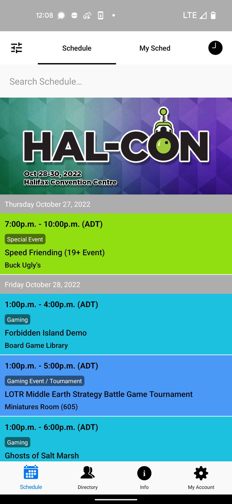
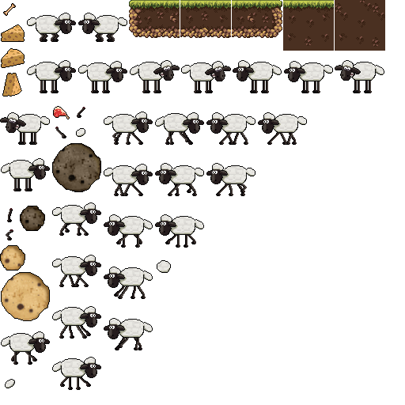

Design
Despite being a far better coder then an artist most of my past with tech outside of hardware and networking has usually been digital art. I pride myself in being able to make functional, appealing UIs while having a broad enough skill set to be able to create all my own assets for my personal projects. Here are just a few examples of designs or art I've made in recent years.
Designs:
I was responsible for the design of the final tablet and main menu UI used in Project Artemis. As well as the website, a lot of the games concepts and "story".

I designed the basic elements required for last years and this years Sched app for Hal-con.

Keith Mcleod and I are very proud of our work on one of our earliest group project to create a board game! Ours was called Wrench in the Works! Keith made all the art while I designed the game, the manual and all the layouts on the cards, boxes etc.
Wrench in the Works - Rulebook!


Art:
Our teacher had us make a game with a sheep avoiding meteors to jump off the edge. I got such a kick out of the idea I made a full set of sprites inspired by Shaun the Sheep for my version. (This was totally unneeded as it was a programming class but what can I say!)


An adorable set of Cards I made for a Digital Imaging class. The cats are inspired by my own chubby albino River!

At one point I spent a night recreating my childhood Gameboy Color in Illustrator so that I could use it as an overlay when streaming. It turned out so well I try and use it when ever I can. Here is an example of a Business card I did for one team project.

Sometimes I almost feel stubborn in my need to create my own assets, but I like to know I can use the art I grow partial to freely. As such I really learned my way around Illustrator making my personal "avatars" logo for my twitch and YouTube. This is Dracrius (shown first) with a Dodo Logo I made a few months later for a Star Citizen Organization.


This last piece is my most recent star field artwork, made entirely from scratch in photoshop. I had done this a few times before in my youth, but this was made in 4K with a lot better practices. It was intended for use on my Twitch and YouTube, but they haven't seen much activity while I have been busy.